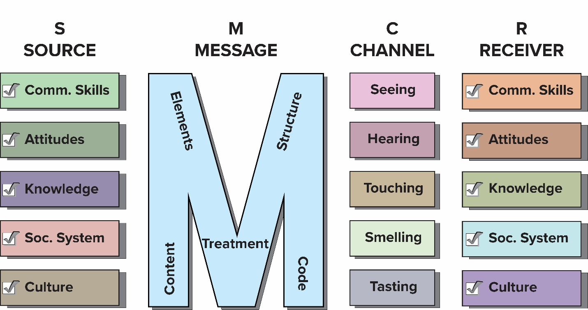
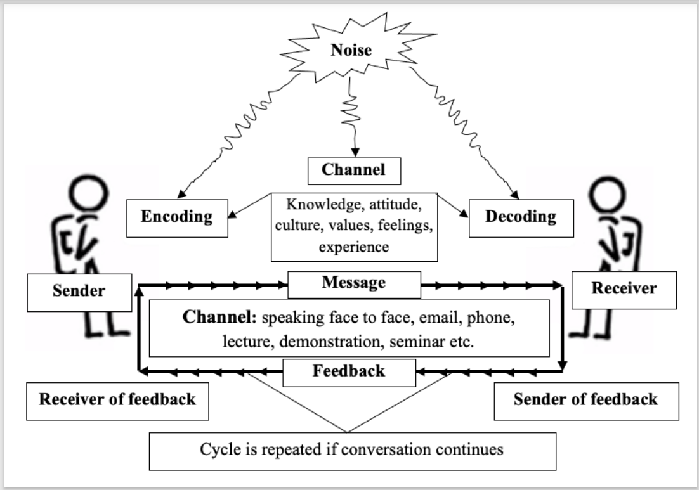
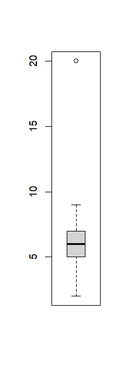

%%{init: {'themeVariables': { 'fontSize': '2rem'}}}%%
graph LR
A[Environment] --> B[Data]
B --> C[Information]
C --> D[Knowledge]
E[Systematised knowledge] --> F[Science]
F --> G[Innovation or Technology]
ARD 5112: Communication and Information Technology
Prof. Dr. Md. Kamrul Hasan
2025-08-17
Introduction to communication
Communication brings common understanding
Source: ecampusontario.pressbooks.pub
Introduction to communication
- Information is asset, and communication skill is wealth.
- Communication and human relations skills are currencies in professional and personal life.
- Human is a social being because they communicate with each other not because only they live in a society.
- Communication controls human’s existence and development.
- By communication one mind affects another.
- Communication is imperative (it controls action).
- Your communication abilities shape your personality.
Concept of Communication

- Communication = transfer of meassage from source to receiver
- Communication is a process by which message is transferred from source to receiver for common understanding.
- It is not linear — it’s reciprocal and iterative.
- It involves feed-forward (message sent) and feed-backward (message received).
Concept of Communication
- Leagans (1961): Communication is a process by which two or more people exchange ideas, facts, feelings or impressions in ways that each gains a common understanding of the meaning, intent and use of message.
- Communication is a process of sending and receiving messages through channels, which establishes common meanings between a source and a receiver.
Flow of Communication
- Sender initiates a message.
- Receiver responds with a feedback.
- Shared understanding is the goal.
Communication is completed only when mutual understanding is achieved.
Communication Cycle Example
- Feedback makes the process interactive and meaningful.
- If someone slaps a boy (Feed-forward), and the boy cries (Feedback), is it communication?
Yes, this is non-verbal communication. Even in negative or chaotic situations, messages are exchanged and feedback occurs.
Chaotic or Silent Communication
- Conflict, violence, or silence can also be forms of communication.
Even no feedback is a form of feedback.
Example: A phone rings but no one answers — we assume they are unavailable.
Calling someone who doesn’t respond — we interpret that as absence or disinterest.
A dead person cannot provide feedback — this ends the communication loop.
Types of Communication
- Verbal (~30% by seeing and hearing)
- Written
- Spoken
- Interactive (e.g. using device)
- Non-verbal (~70% by touching, tasting, seeing, smelling)
- Posture and gesture
- Proximity, closeness
- Eye contact and facial expressions
- Voice tone (alas! hurrah! yeaaaa!)
Importance of Communication
- About 70% of our time is spent for communication.
- Present age is called information age.
- Adoption of innovation by farmers
- Identification and solution of problems of farmers
- Create conducive situation for professional development
- Bring desired behavioural changes among farmers
- Social development (relations, values, norms, culture)
- Effective communication improves trust, cooperation, conflict resolution, teamwork and collaboration
Communication and human behavior
Functions of communication:
Communication builds human relationships through:
- Persuasion
- Negotiation
- Diplomacy
- Dispute resolution
Elements of Communication
Five elements of communication:
- Source/communicator/sender
- Message
- Channel
- Receiver/audience/respondent
- Feedback
Elements - Source
Communicator/source/sender
- Communicator acts as an originator of the message
- They start the communication process
- Task of a communicator ⇒ message selection and treatment
- Homophilous source and receiver enjoy comfort in communication
- Homophilous means similar in beliefs, values, education, social status, etc.
Qualities of a Good Communicator
- Knowledge level: Must know the message, objectives, needs, audience aspiration
- Faith of the receiver: More credible source leads to greater acceptance
- Interest: Adequate efforts and devotion to communicate the message
- Communication skill: Efficient message selection and treatment
- Language and culture: Compatible language helps proper treatment and interpretation
Qualities (Continued)
Attitude and presentation:
- Positive attitude towards message and receiver. Inattention, vocabulary differences, poor pronunciation, poor articulation, plural meanings, improper association should be avoided.
Message treatment:
- Handle message to make it clear, understandable and realistic
- logically arranged message gets better reception
- Understand the audience for proper treatment
- Message treated for the audience, not for the communicator
- Rational/reward appeals for literate farmers; fear appeal for illiterate farmers
Elements - Message
- Important information communicated by the source
- Good message makes individual feel a need that can be satisfied by action
- Should be valid, unambiguous, comprehensive and of utility
- Valid message comes from credible source and conforms with intentions
Criteria of a Good Message
- Communicableness - easy to communicate
- Less social and economic risk
- Aligned with beliefs, values and economic capabilities
- Simple - easy to understand and practice
- Divisibility - permits small scale trial before full adoption
- Relative advantage - higher benefits than existing
- Accuracy - relevancy and suitability well-tested under local conditions
Elements - Channel
- Medium or vehicle which carries the message
- Physical bridge between source and receiver
- Extension teaching methods are communication channels
- Person, conversation, face-to-face, word of mouth, mobile phone, newspaper, radio are examples
- Must be used in right way, right time, for right actions with right audience
- Can be local or cosmopolitan, and interpersonal, group or mass
- Early adopters use mass communication; late majority uses interpersonal channels
Channel forms, nature of personnel and nature of contact
Reference: Ray (2003)
Forms: Written (newspaper), spoken (radio talk)
Nature of personnel: Localite, cosmopolite
- Personal localite (neighbour, friends), personal cosmopolite (extension agents), impersonal cosmopolite (no personal face-to-face contact, newspaper)
Nature of contact: Individual (extension agent at home visit), group (trainer in a group meeting), mass (newspaper)
Criteria for Selecting Channel
- Availability - Locally available, common and familiar
- Cost - Simple, cheap and easy to obtain and handle
- Preference of communicator - Must be skilled in using selected channels
- Suitable content and receiver - Receiver should understand message and use channels
- Frequency of use - Repetition enhances acceptability; multiple channels in parallel works better
- Effectiveness - Should effectively bring together sender and receiver
Nearly extinct local media - e.g. folk music, theatres can be used
Elements - Audience
Receiver of the message (men, women, village leaders, farmers, etc.)
Factors affecting desirable response:
- Needs - Should be studied before initiating communication
- Knowledge level - Deliver message considering receiver’s knowledge
- Attitude - Form favorable attitude; message decoding depends on attitude
Audience (Continued)
- Available resources - Message actions need resources; align with available resources
- Socio-cultural systems - Message should be compatible with social systems
- Experience - New learning built upon previous experience; satisfactory experience leads to fast learning
Elements - Feedback
- Reaction given by receivers in response to message
- Return process where receiver acts as a source
- Communication process ⇒ feed forward and feed backward
- Self-communication: message encoded is fed back into the system by decoding
- Action - Reaction interdependence is feedback
- Both sender and receiver can encode and decode simultaneously
Elements - Feedback (cont’d)
- Provides information to the sender about the success of communication
- Controls encoding of next messages
- Feedback can be:
- Intentional (e.g., nodding to show understanding)
- A student raising hand = intentional
- Unintentional (e.g., yawning from boredom)
- Looking distracted = unintentional
- Intentional (e.g., nodding to show understanding)
Importance of Feedback
- Clarify message - Feedback helps adjust or clarify the message
- Removes barriers - source can learn adoption barriers
- Facilitates proper action - to make message understandable
- Rectifies transmission errors - identifies channel noise to minimize
- Increases accuracy - reduces message distortion, improves adoption
Importance of Feedback (cont’d)
- Enhances confidence - improves rapport between source and receiver
- Improves learning - both active and passive feedback enhances knowledge
- Improves communication - rewarding feedback results in continued adoption
Problems in Getting Feedback
- Limitation of the channel
- Shyness of the receiver
- Discouraging by the communicator
- Message delivered in wrong time
- Cultural barriers
- Socio-economic barriers
- Language barriers
Analysis of communication models
Definition of Communication Model
- Model: Miniature (drawings, charts, diagrams) of complex process to show relationships, flows, and structures of a complex process
- Helps simplify complex ideas for teaching and evaluation
- Offers organised way of looking at complex process
- Should show all important elements with minimal text
- Models: Berlo (1960), Shannon-Weaver (1949), Leagans (1963), Rogers and Shoemaker (1971)
Types of Communication Models
Linear/ one-way/ action Model – One-way transmission (e.g., TV broadcast, Shannon-Weaver’s model, Berlo’s model)
Interactive/ two-way Model – Sender ↔︎ Receiver with feedback (e.g. News blog, Rogers and Shoemaker’s model, Leagan’s model)
Transactional or interpersonal Model – Both parties simultaneously sender and receiver (e.g. Interview, Barlund’s Model, mindful model)
Modern communication favors transactional, real-time exchange — especially in interpersonal and professional settings.
Berlo’s Model of Communication
Source: ecampusontario.pressbooks.pub
Shannon-Weaver’s Model of Communication

Leagan’s Model of Communication

Rogers and Shoemaker’s Model
Mindful (transactional) communication model
Source: ecampusontario.pressbooks.pub
Mindless communication: distraction, e.g. scrolling smartphone while listening.
Typical Communication Model (M. K. Hasan)
Noise/Disruption in Communication
Communication cycle disrupted by noise due to:
Internal causes
- Physiological: Hunger, fatigue, discomfort
- Psychological: Good or bad emotion or feelings
- Semantic: Meanings of words or symbols not matching
External causes: Noisy room, temperature extremes, broken devices, distractions
Notes:
- Encode ⇒ organization of information as message
- Message ⇒ encoded information
- Decode ⇒ interpretation of message
Causes of Noise in Communication
- Failure of channel to reach intended audience - not all attend meetings or access mass media
- Failure to handle channels skillfully - not everyone may hear message in meeting
- Failure to select appropriate channels - wrong method for objectives
- Failure to use channels according to audience abilities - written materials for illiterate
- Failure to avoid physical distraction - moving people, noise, heat, lighting, crowdedness
Causes of Noise (Continued)
- Failure of audience to listen/look carefully - undivided attention needed
- Failure to use enough channels in parallel - 5-6 channels may be needed for impact
- Use of too many channels in series - More channels in series increases distortion risk
Reference: Ray (2003)
Good communicator should identify and eliminate sources of communication noise
How to Minimize Channel Noise
Use channels based on:
- Specific objectives of message
- Nature of message - direct vs abstract, difficulty, scope, timing
- Audience - size, need, interest, knowledge
- Availability of channels and logistic support
- Combination of channels - parallel vs series
- Relative cost of channels
- Time available of audience and communicator
- Nature of channels - seeing, hearing, or doing
- Extent of cumulative effects of message
- Skills of communicator
Source Credibility
Concepts of source credibility
- Acceptance depends partly on “who said it”
- Set of perceptions about sources held by receivers
- Includes competence and trustworthiness
- May include: age, education, sex, language, ideology, socioeconomic status, etc.
Dimensions of source credibility
- Safety: Trustworthiness, kind, friendly, honest, just, dependable
- Qualifications: Expertness, experience, knowledge, skilled, communicability
- Dynamisms: Active, energetic, emphatic, fast, frank, bold
- Sociability: Gentle, accommodative, approachable, hospitable, attractive, pleasant
Importance of Source Credibility
In persuasive communication, vital role in message acceptance
Impacts:
- Participation in meeting - better/poor
- Attention of audience - sufficient/inadequate
- Message acceptance - low/high
- Implementation of message - desired/undesired
- Feedback of audience - affects understanding
Personal cosmopolite sources perceived as more credible than mass media
Message Management
Characteristics of a Message
The message is the orderly organized and encoded for information, instructions, recommendations or contents for persuasion that affect socioecnomic life. The should be:
- Simply stated and clearly understandable
- Relevant to objective, specific, accurate and scientifically valid
- Timely in relation to practice
- Appropriate to channel used
- Appealing and attractive
- Applicable to user system: Socially and economically significant
- Adequate and complete
- Manageable by source and receiver: Aligned with mental, social, economic, physical capabilities
- Persuasive - affects affective domain for changes
Treatment of a Message
- Message treatment means encoding the message to make it understandable for desired feedback
- Necessary to carry intended meaning
- Organized message produces more comprehension and retention
- Disorganized message may foil communication functions
For effective persuasion (Hovland et al., 1953), message treatment involves:
- Pattern of organization
- Ordering of arguments
- Ordering of arguments
- Nature of arguments
- Message style
- Message appeals
A. Pattern of Organization
- Spatial order - space or geographical pattern (e.g. AEZ, soil tracts)
- Chronological order - time pattern, historical perspective (e.g. Agricultural development)
- Deductive order - general to specific (e.g. role of communication)
- Inductive order - specific to general (e.g. impact of compost use)
- Psychological order - based on attitude, need, satisfaction, visualization, action
- Problem-solving order - focuses on breking down the problem (e.g. cultivation process)
- Climax order - key points at the end
- Anticlimax order - key points at the beginning
- Pyramidal order - key points at middle
B. Ordering of Arguments
Agreeable vs disagreeable parts
- Agreeable parts at beginning draw attention (pleasant materials help persuasion)
- Disagreeable parts at beginning can deter audience, causing avoidance
C. Nature of Arguments
One-sided vs two-sided message
- Limiting disfavourable parts suitable for illiterate audience. Example: Family planning helps welfare (favourable) but may contradict religion (disfavourable)
- Two-sided message more effective with higher education receivers
D. Message Style
- Message repetition - Increases awareness but continued repetition may cause boredom
- Message clarity - Receivers must understand to accept; correlated with agreement/retention
- Message contents - Communicator is evaluated based on message contents affecting credibility
E. Message Appeals
Psychological features that invoke feelings and create motivation.
1. Fear appeal
- Creates threats affecting affective/cognitive domains to motivate behavior change
- Example: Get vaccinated because cholera epidemic causing 90% death
- Principle: Uncomfortable drive state motivates action to minimize/remove it
- Moderate fear effective; higher level causes anxiety and confusion
Message Appeals (Continued)
2. Reward appeal
- Message organized with possible benefits from innovation
- Blended with relative merits/advantages
- Example: Binashail has taller plants than Nazirshail, 20% higher yield, earlier maturity, better recovery, rainfed cultivation, high demand
Conclusion drawing: Explicit conclusions by source are more effective than implicit by receivers.
Message Appeals (Continued)
3. Emotional appeal
- ‘Pathos’ appeals creating appropriate feeling using values/emotions
- Argue for belief by pointing out rewards from holding belief and affection (religious, family, loving ones, communinity, country, environment, welfare, and so on)
- This something like finding one’s weak (extreme affinity) points and directing the message encompassing that side.
- Example: Clean homestead for safe environment for kids/parents
Message Appeals (Continued)
4. Rational appeal
- ‘Logos’ appeals presenting empirical/logical evidence
- Result demonstration is rational appeal (seeing is believing)
- Emotional and rational appeals often complementary
- Emotional for politicians; rational for elite/educated voters
- Association with known facts, visual elements, non-verbal cues works well
Message Reception - ‘Selective’/‘Partial’
- Process of exposure/attention, perception and retention
- Learning in terms of change in behaviour depends on attention and perception
- Audience reaction explained by selective exposure, perception, retention
- People attend to (selective exposure), understand (selective perception), remember (selective retention) parts supportive of existing knowledge/attitude/beliefs
- Knowledge-gap hypothesis: Farmers with better knowledge have better attention/perception/retention. Thus, they aquire more knowledge, increasing the gap with the farmers with less knowledge.
Variables for evaluating a message
- Listenibility/readability - Economy of words; short active sentences (8-10 words); short words
- Human interest - Related to receivers
- Vocabulary diversity - Avoid repetition in formal/informal communication
- Realism - Empirical message more accepted than abstract
- Verifiability - Property of being scientifically tested
Level and Pattern of Communication
Three Types of Communication
- Interpersonal: Communicator meets individual audience (face-to-face, meeting, visit, letter, phone, video call)
- Group: Communicator reaches a group with known identities (group discussion, method demonstration)
- Mass: Communicator reaches large number with unknown identities (mass gathering, radio, TV, newspaper)
Intrapersonal communication: Communicating with onself
Interpersonal Communication
- Non-verbal cues vital in interpersonal, classroom, group, mass communication
- Non-verbal communication can be stronger than verbal one.
- Strong skills needed in personal/professional life
- In business: speak clearly/confidently to build rapport and convince
- Conflicts are common in interpersonal communication
- Some inherently expert; others need to learn skills and guidelines
Skills needed for Interpersonal Communication
Source: ecampusontario.pressbooks.pub
- Listening skill: mindful listening, careful and thoughtful attention
- People skill: sympathy and empathy, see the context from others’ perspectives
- Emotional intelligence: knowing own emotion, showing careful emotions and reactions
Stick to the ethical values while communicating. Respect culture, dressing, language, norms and locality of the audience.
Guidelines for Verbal Communication
- Think before speaking (check your gear before hitting the acceleration pedal)
- Be an active listener (receiving, understanding, remembering, evaluating, responding)
- Be clear and concise; make simple considering audience
- Speak with confidence using proper voice, body language, eye contact
- Vary vocal tone; use inflection for emphasis, pitch for emotion
- Be aware of non-verbal cues; read audience body language
Guidelines for Non-verbal Communication
- Facial expression - Relax muscles, smile, avoid frown, conform with emotion
- Eye contact - Binds speaker/audience, conveys honesty/respect; roam/change gaze, don’t stare
- Tone, pitch, speed - Speak slowly/clearly with modulation
- Appearance - Proper dress, make-up and hairstyle for context; formal outlook for seriousness
- Gesture - Using body parts (head, hands, thumbs, legs, whole body)
Non-verbal Guidelines (Continued)
Body postures - Appropriate sitting/walking/standing
- Introvert: Folded hands, crossed legs
- Tired/lack confidence: Dropping shoulder
- Hiding mentality: Hands behind
- Standing on one foot: Personality issues
Touch - Hug, handshake, light tap
Space - Closeness/distance shows affection/domination/respect.
Getting rid of distracting mannerism - Vocal impediments, finger tapping, lip biting/licking, toying with objects, frowning, throwing hands, shaking legs, adjusting dress/hair, head wagging
Improving Non-verbal Communication
- Difficult to improve because faults arise unconsciously
- Video record self-presentation and review with colleague/friend
- If audience notice mannerism, they focus on it rather than message
- Gestures should be graceful and unobtrusive
Sight, sound, touch, smell, and taste are sensory channels (Dubey & Bishnoi, 2008)
Conflicts in interpersonal communication
- Conflicts are common and normal
- Conflicts can be both constructive and destructive
- Difference in attitude, values, expectations, power and status cause conflicts
- Well resolved conflict brings stronger relationship and better problem solving
- Poorly managed conflict brings stress and damages relationships
Conflict resolution
- Use professional communication skill
- Solve conflict mindfully and thoughtfully
- Find points of both the parties’ actions
- Identify common parts of the both parties
- Use empathy: see from others’ perspective
- Understand your own perspective
- Point towards to area of common agreement
- Recommend mutually beneficial ways by compromise and collaboration
Functions of group communication
- Problem indenfication
- Problem solving
- Information sharing
- Decision making
- Collaboration and cooperation
- Motivation
- Conflict management
Mass Communication
Communication methods, channels and aids
Methods (TV broadcast):
- how to transfer the message
- nature of interaction
Channels (TV):
- through what the message is transferred
- medium or essential tools of interaction
Aids (loud speaker):
- how the transfer can be made more effective
- helping tools of interaction
Communication types linked to methods, channels and aids (Ray, 2003). Note: These are sometimes overlapping and the distiction is fuzzy and blurred. Consider their position and way of use.
Individual
Group
Mass
Public speaking
Art of public speaking (Khan, 2002):
- Take it easy: Anything for the first time seems difficult. Take time for preparation.
- Practice makes perfect: Rehearse the contents by speaking loudly in front of a mirror, friends or colleagues.
- The chemical adrenalin: Control your adrenalin (emergency defense system activator hormone), don’t be controlled by it. You need this hormone to overcome dull, uninteresting and monotonous speech. Uncontrolled adrenalin can ruin your speech. Take opportunities whenever you get chances.
- Communicate message: Keep information in your pocket to deliver. This will automatically eliminate your nervousness.
Principles of public speaking (Khan, 2002)
- Consider public speaking as a conversation.
- Use audio-visual aids, if available.
- Spend more time in preparing than delivering talk.
- Rehearse loudly using your posture and gesture.
- Keep contact with audience. Don’t show your back to the audience.
- Use modular expression - rising or lowering voice.
- Emphasize points by changing voice.
- Speak loud enough.
- Follow the ABC of speaking - Accuracy, Brevity, Clarity.
- Speak from your mind rather than reading.
Communication Strategy
Communication strategy
A communication strategy is a detail plan that includes:
- what a communicator will say,
- to whom, why, how, and
- when to achieve specific objectives of communication, such as transferring a technology or improving farmers’ skill.
Communication stragy = setting goals ⟹ identifying target audiences ⟹ treatment of messages ⟹ selecting appropriate channels ⟹ measuring effectiveness
Key components of communication strategy
- Goals: Clear, measurable objectives for the communication effort.
- Audience: The specific people or groups the communication is intended for, whether internal (SAAO) or external (farmers).
- Messages: The core ideas and information that need to be communicated, organized for the target audience.
- Channels: The platforms or methods used to deliver the message, such as social media, bulletin, or face-to-face meetings.
- Metrics: Ways to measure the success and effectiveness of the communication strategy.
Example of a communication strategy
A strategy to inform 200 potential farmers about a technology could involve: poster/leaflet/farmers meeting, and campaign, using consistent parallel messaging about the benefits to motivate them to adopt the technology.
Q. How will you evaluate teh success of this communication strategy? Communication success = Fidelity + Effectiveness
Communication fidelity
- Communication fidelity indicates the accuracy of message transfer. This is about Clarity.
- This means the degree to which the receiver perceives the intended meaning of the message
- High fidelity: Receiver clearly understands the message. e.g., A UAO suggests a farmer to apply a pesticide at 7 days interval always in the afternoon during relatively low wind flow. If the farmer can explain the same, this indicates high communication fidelity.
- Low fidelity: Receiver misunderstands the message. e.g., If the farmer in the above example understands partially the message, this will have low communication fidelity.
Communication effectiveness
- Communication effectiveness refers to the degree to which the communication goal can be achieved i.e. the desired effects can be realised. This is about Impact
- High effectiveness: Receiver follows the instruction. e.g., A UAO suggests a farmer to apply a pesticide at 7 days interval always in the afternoon during relatively low wind flow. If the farmer does the same, this indicates high communication effectiveness.
- Low effectiveness: Receiver follows the message. e.g., If the farmer in the above example does not follow the instruction, this will have low communication effectiveness.
Effective communication is a function of:
- Source credibility – Trustworthiness, expertise, knowledge, attitude, delivery skill
- Audience characteristics – Age, education, values, needs, attitude, intention, social status
- Channel availability – Face-to-face, phone, email
- Feedback mechanism – Immediate or delayed, verbal or non-verbal
- Message treatment – Tailoring the message aligned with clear objectives, channel and audience improves effectiveness.
Factors affecting communication effectiveness
- Socio-deomographic and economic characteristics, including education, experience, income level, social interaction intensity
- Media choice
- Language barriers
- Audience attitude
- Audience need
- Role of extension agents, input dealers and farmer groups
- Focus of the communication: targeted vs general
References: Awili et al. (2016), Age et al. (2012) and Oktarina et al. (2008)
How to measure communication effectiveness?
Reading assignment: Time 2 hours
Source:
Persuasive Communication
Persuasive communication: Art to convince using skills in negotiation, bagaining, diplomatic situation, arbitration and conflict resolution.
Considerations:
- Empathy: Put yourself in others’ shoes
- Clarity: Use clear, precise language
- Relevance: Match audience interest
- Respect: Be polite and culturally sensitive
Objectivity and Subjectivity
- Objective: Facts, data, neutrality (as it is description)
- Subjective: Emotions, experience, opinion (mixed with prejudice)
- Important vs Urgent: Don’t miss the important ones becuase of many other urgent issues.
Good communication blends all thoughtfully.
Usual things don’t make headlines — unusual does!

Avoid Biases in Communication
- Avoid prejudices and bias.
- Don’t rely only on past experience.
- Incorporate latest and accurate information.
System Approach
Knowledge and Information
- Knowledge and information are often used interchangeably.
- Knowledge means processed and perceived information that can be retrieved when needed.
- All are projected towards reducing uncertainty for a decision maker.
Concept of a System
System implies-
- wholeness in structure and objective
- presence of parts in relationship
- the whole is different from the elements
- dropping any elements can collapse the system
System has-
- boundary for filtration and protection
- balanced state
- internal and external factors (dynamics/change)
- feedback mechanism
- subsystem with sub-component
- supra-system
Characteristics of a system
- Wholeness
- Objective
- Components
- Structure
- System level
- Subsystem
- Interrelationship
- Interaction
- Interdependence
- Joint effect
- Coordination
- Process
AKIS
- AKIS - Agricultural Knowledge and Information Systems
- It is a concept to explain the exchange of information, knowledge and services among research, extension and farmers.
- AKIS is, nowadays, also known as Agricultural Knowledge and Innovation System
- It is an analytical construct for illustrating actors and networks of agricultural knowledge and information flow.
Reference: Germundsson (2021)
Typology of AKIS
- Strong AKIS: Influential actors or organisations at national level, high public investment
- Weak AKIS: Small private initiatives, not well supported by policies
- Integrated AKIS: Coordinated structure, cooperative, supported by national policies
- Fragmented AKIS: Independent agents, may be competing, rarely cooperate, not well coordinated
AKIS in Europe
Simple AKIS/AKS
Importance of AKIS
According to Dubey & Bishnoi (2008), AKIS is important to analise for:
- Identification of problems at farm levels
- Development of innovations
- Dissemination of technologies
- Measuring utilisation effectiveness
Insights of AKIS in Bangladesh
- Farmers generate a lot of knowledge.
- Information channels may not be agricultural.
- Farmers mostly get information from farmers.
- Formal channels are often top-down.
- Little linkage exists among elements.
- Need and access to information varies with farmer categories.
- AIS, mass media, extension agents, agricultural research organizations, input dealers, and farmers are major part of AKIS in Bangladesh.
Questions for Analysing AKIS
The AKIS can be analysed using the following questions (Blaettler et al., 2020):
- Who are the main actors of the AKIS? Are there key actors missing?
- How do various AKIS actors interact?
- Who are the main recipients/clients of knowledge and information?
- What are the main methods used for knowledge and information transfer?
- What are the main assets and gaps of the existing system?
- How can the AKIS be improved?
Information Technology
Assignment and presentation: Chapter 9
- Role of telecommunication in agricultural technology transfer
- Communication infrastructure for agricultural development in Bangladesh
- Use of ICT and GIS in agricultural development in Bangladesh
Instructions:
- 16 October 2025: Written assignment (~3 pages, Times New Roman, 12 font size, 1.15 spacing)
- 16 October 2025: Presentation (15 minutes, 10 ppt slides)
- Class test 1: Chapter 1
- Class Test 2: Chapter 2 to 4
- Final: Chapter 5 to 8
References (Online resources + the followings)
Age, A. I., Obinne, C. P. O., & Demenongu, T. S. (2012). Communication for sustainable rural and agricultural development in benue state, nigeria. Sustainable Agriculture Research, 1, 118–129. https://api.semanticscholar.org/CorpusID:53595165
Awili, M. A., White, & Kimotho, S. G. (2016). Factors that influence effective communication of agricultural information among farmers – the case of farmers in south west kisumu ward, kisumu county. https://api.semanticscholar.org/CorpusID:133467930
Blaettler, D., Deisadze, S., Fehle, P., Gelashvili, S., Kochlamazashvili, R., Lehmann, R., & Mamardashvili, P. (2020). Analysis of the agricultural knowledge and information system (AKIS) in georgia. Final report. UNDP. https://iset-pi.ge/storage/media/other/2022-03-25/e3e75540-ac49-11ec-9b98-7310e1da4f4e.pdf
Dubey, V. K., & Bishnoi, I. (2008). Extension education and communication. New Age International.
Germundsson, L. B. (2021). What is AKIS? LTV faculty factsheet. https://pub.epsilon.slu.se/26228/1/germundsson_l_211129.pdf
Hovland, C. I., Janis, I. L., & Kelley, H. H. (1953). Communication and persuasion: Psychological studies of opinion change. Yale University Press.
Khan, P. M. (2002). Textbook of extension education. Himangshu Publications.
Oktarina, S., Sumardjo, & Rustiadi, E. (2008). Keefektivan komunikasi dalam pengembangan peran-peran kelembagaan agropolitan. https://api.semanticscholar.org/CorpusID:129751144
Ray, G. L. (2003). Extension communication and management. Kalyani Publishers.